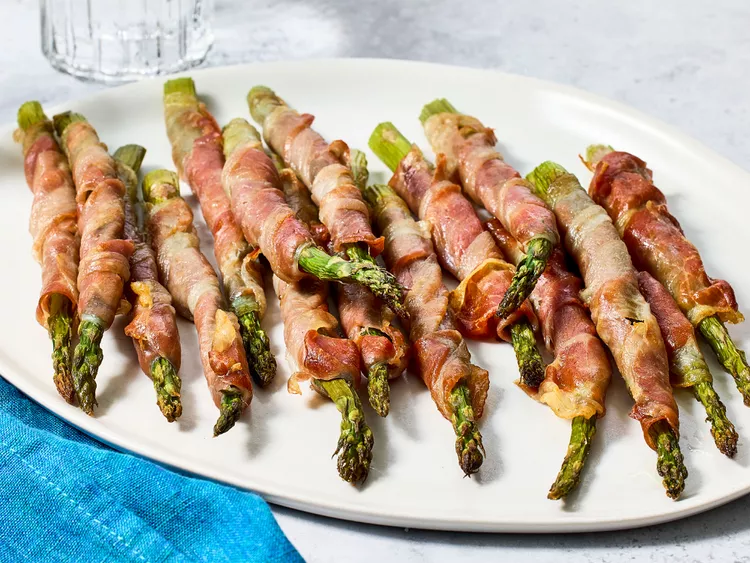

Asparagus Wrapped in Prosciutto

Description
Prosciutto-wrapped asparagus is an extremely easy and elegant appetizer or side dish everyone loves! Fresh asparagus spears are wrapped in prosciutto, then baked until crispy. A great dish to make ahead, and bake just before serving.
Ingredients
- 1 tablespoon olive oil
- 16 spears fresh asparagus, trimmed
- 16 slices prosciutto
Steps
-
Preheat the oven to 450 degrees F (220 degrees C). Line a baking sheet with aluminum foil, and coat with olive oil.
-
Wrap one slice of prosciutto around each asparagus spear, starting at the bottom, and spiraling up to the tip. Place the wrapped spears on the prepared baking sheet.
-
Bake in the preheated oven for 5 minutes. Remove, and shake the pan back and forth to roll the spears over. Return to the oven until asparagus is tender and prosciutto is crisp, another 5 minutes. Serve immediately.
Home